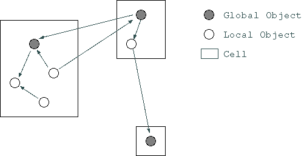

In OZ++ language, there are two types of user-defined types, class and record.
Like basic data types, record types are interpreted as values. Assignments or comparisons following the types are executed against this value. In addition, when record types are used for assignments, return values, or value arguments of method calls after the types, all the values are copied (see Chapter 5.12).
Class types include ordinary classes (see Chapter 5.13) and static classes (see Chapter 5.14). Static classes are different from ordinary classes in the following way:
The class type is interpreted as a reference. Both assignments and comparisons (explained later) are executed against this reference. Therefore, when class types are used for return values or value parameters of method call, there are two cases: when references are passed, and when instances are copied (as explained later).
class Container;
Container a, b;
a=>new(); // generates an instance, and binds it to 'a'
b = a; // assigns the reference of 'a' into 'b', this
// makes both 'a' and 'b' share the same instance
Class instances have the attributes of either global or local. Static class instances cannot be global.
A unique object ID is given to distinguish global objects inside the system. This ID is used so that all references can access and share global objects with distributed transparency. Inside the methods of a global object, it is possible to get a reference as a global object to itself by reserved word oid.
These function as parts of global objects. Inside the same global object, they are accessed as references. However, when accessed between global objects, copies of local objects are executed.
For this reason, local objects are not given object IDs, and are quite related to global objects.
A set of instances comprised of a global object and all its local objects is called a cell. A cell is a unit of memory management of an executor. The relationship among cells, global objects, and local objects is shown in figure 5.5--1. In the language, reference to the global object inside a cell is made by the reserved word cell.
Furthermore, the difference between global objects and local objects can be distinguished as the difference between different types. That is, even for instances of the same class, global objects can not be assigned to local objects, and nor can local objects be passed to a method's call by value arguments where only global objects are specified.
|  |
class Container;
Container a; // a is a local object
global Container b; // b is a global object
a=>new();
b = a; // as the types are different,
// an error occurs.
Furthermore, if the method call includes a call by a value arguments or a return value of a class type, the treatment of global objects differs from that of the local ones. The global objects are already treated as references. The local objects may also be treated as references, but only when method calls are made against instances inside the cell where the local objects belong. Otherwise, local objects are copied and the copy is used for further processing.